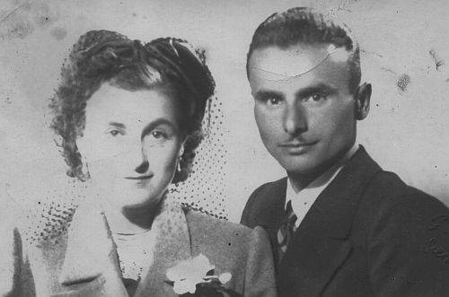

Quercegrossa (Ricordi e memorie)
CAPITOLO II - FAMIGLIE DEL '900
Indice dei Capitoli
Indice Famiglie del '900
NOCCIARELLI (1943-1969); mezzadri; Olmicino.
Per trovare le origini di questa famiglia non c'è bisogno di risalire troppo nel tempo in quanto il suo capostipite Niccodemo o Nicodemo era uno dei figli dell'Ospedale di Siena, ma siamo in grado di ricostruire con una certa esattezza la sua storia personale e dei suoi discendenti. Nacque a Murlo il 23 aprile 1861 e il giorno successivo, alle sei della mattina, venne lasciato alla Ruota dell'Ospedale di Siena, portato da Carlotta di Giuseppe Tozzi di Murlo. Non aveva addosso nessun segno di riconoscimento. Lo stesso giorno, secondo la prassi, ricevette il battesimo nella Pieve di S. Giovanni Battista e gli furono imposti nome e cognome: Niccodemo Nocciarelli. Tre giorni dopo, il 27 aprile, è dato a balia per l’allattamento a Carolina Gori, moglie di Luigi Ciabattini. Erano i Ciabattini contadini a Pornanino, podere in parrocchia di S. Fedele; famiglia di sette persone tra cui cinque figli tra i 5 e i 17 anni. Carolina aveva circa 33 anni quando prese Niccodemo. Rallevò il bambino forse per i primi anni, ma la sua partenza dal podere nel 1862 ci impedisce stabilirne la durata. Di certo sappiamo che Niccodemo viene restituito all'Ospedale perché nel 1874, quando il ragazzo è 13enne, è consegnato il 15 marzo ad Annunziata vedova di Giuseppe Soldani, del Comune di Radda, evidentemente bisognosa di un garzone. Sconosciuto è il luogo di dimora di detta Annunziata. Nell'anno 1888 la famiglia di Pietro Rosi torna al podere di Pornano di S. Fedele e con loro c'è anche Niccodemo Nocciarelli, maritato con Maria, figlia del capoccio. Chissà se Niccodemo era stato adottato in casa Rosi o aveva conosciuto Maria abitando dalla vedova Soldani? Fatto sta che si erano sposati ed era entrato a far parte della famiglia Rosi a pieno diritto. Dal matrimonio nacquero tre figli: Fedele, il primogenito, nato 13 settembre 1895, Giovanni nato a Tregole il 21 ottobre 1900 e Annunziata nata il 21 maggio 1904 e morta in giovane età. Non ne conosciamo la causa, ma anche Maria morirà intorno al 1905/06 e Niccodemo si risposerà nel 1909. C'era in casa Rosi la vedova del fu Simone Rosi, un fratello del capofamiglia morto da diversi anni. Questa donna, Faustina Fattorini, aveva allevato i suoi tre figli, rimanendo, come era naturale, nella casa del marito. Fu anche naturale che con il vedovo Niccodemo si instaurasse un rapporto particolare che li portò, anche se lei sfiorava la cinquantina, a unirsi in matrimonio per una vecchiaia senza solitudine. Si sposarono nella chiesa di S. Fedele il 23 dicembre 1909. Niccodemo aveva 48 anni, Faustina 52. Da notare che risale all'arrivo a Pornano la storpiatura del cognome Nocciarelli. Infatti il parroco di S. Fedele scrive in maniera inesatta Norciarelli, e questa storpiatura arriverà fino a Quercegrossa quando don Luigi nel 1946 segnerà anch'esso Norciarelli. Oggi la famiglia si è ripresa la corretta grafia del cognome Nocciarelli. La permanenza a Pornano si protrarrà per qualche decennio. Prima di andarsene ebbero l'opportunità, offertagli dal proprietario di acquistare il podere. I Rosi lasciarono la scelta a Niccodemo e ai suoi figli, ma quest'ultimi di fronte all'inevitabile indebitamento rifiutarono decisamente preferendo restare in rapporto di mezzadria. Intanto, Fedele, ferito in guerra, era riconosciuto invalido e godeva di una piccola pensione. In quegli anni, il 18 ottobre 1921, all'età di 60 anni se ne andava Niccodemo, mentre Faustina moriva il 28 ottobre del 1926. Dopo questo lutto, Fedele e Giovanni lasciano il vecchio podere per insediarsi all'Olivino di Pievasciata nel febbraio del 1927 per rimanervi circa tre anni. Sono in tutto nove persone: tre uomini e sei donne. Fedele è il capoccio. Ha preso in moglie a S. Giusto in Salcio nel 1919, Cesira figlia di Raffello, dei Vettori che troveremo poi a Bellavista e successivamente a Quercegrossa. L'8 novembre 1921, venti giorni dopo la morte del nonno Niccodemo, nasce un maschietto ed è inevitabile che al nipotino sia stato imposto il nome del nonno defunto. C'erano già Maria e Dina, le figlie nate nel 1920 e 1921. Il fratello di Fedele, Giovanni, era accompagnato dalla moglie Nazzarena Rocchigiani (1899) sposata a Tregole nel 1921. Anche loro avevano avuto la prima figlia Elina nel 1923. Da ora la memoria familiare è in grado di tracciare il percorso compiuto nei decenni centrali del Novecento. Dal podere Olivino a quello delle Calcinaie sempre di Pievasciata, poi da lì, nel 1937, a Fagnano podere Campolodoli della tenuta Terrosi. Qui si sposò Maria, la figlia maggiore di Fedele, con un Manganelli di Valiano; i due sposi tornarono molto più tardi a Poggibonsi con la figlia e qui vi morì Maria.
Olmicino
Finalmente nel 1943 i Nocciarelli si trasferiscono a Quercegrossa, all'Olmicino, dove sostituiscono i partenti Papi e dove trovano la famiglia Palazzi con i quali si imparenteranno con un matrimonio. Cambiarono e vennero a Quercegrossa per avere un podere più grande: tredici ettari tutti coltivabili. Un podere che offrisse un adeguato sostentamento a un famiglia forte di tredici unità. A Fedele, oltre ai già ricordati Niccodemo, Maria e Dina erano nati Elio nel 1928, Mario nel 1933 e due gemelli Giorgina e Giorgino nel 1936. Quest'ultimo visse soltanto 28 mesi e morì fulminato da una polmonite. Dal canto suo Giovanni contribuiva con Annunziata nel 1925, Rino nel 1930 e Bruno nel 1939 che si aggiungevano alla sorella Elina. Passati gli anni del conflitto mondiale la famiglia Nocciarelli si trovò di fronte alla prima grande divisione. Forse il podere iniziava ad essere troppo stretto per tante braccia, fatto sta che Giovanni con la sua famiglia emigrò verso Vagliagli, contadini a Cignano e più tardi a S. Regina. Fedele con i cinque figli continuò la sua attività di mezzadro, mentre col passare del tempo quest'ultimi iniziavano a mettere su una loro famiglia. Iniziò Dina il 28 settembre del 1952 che si accasò presso i vicini Stazzoni, moglie di Mario; nel 1957 fu la volta di Giorgina che prese Mario Mugnaini; Elio sposò una Frosini di Monteo e Niccodemo una Chini. Infine Mario il 28 settembre del 1960 nella chiesa di Quercegrossa sposò Lorena Palazzi dell'Olmicino e si può dire che prese moglie in casa. Il pranzo dai Palazzi in una camera sgombrata per l'occasione e adattata a sala da pranzo con tre amiche per cameriere: Mirella Masti, Piera Lorenzoni e Marina Morini. Nel pomeriggio partenza per il viaggio di nozze. All'arrivo a Genova, alle 23, c'era Pierugo del Buti ad aspettarli, poi ad Arenzano dai cugini del babbo di Lorena. La domenica successiva erano di nuovo a casa e festeggiarono ancora tutti insieme. Nel 1963 Mario acquista la sua prima macchina, una Cinquecento. Seguono anni di incertezza sul da farsi. Dopo la morte di Fedele e quella prematura di Elio, avvenute nel 1966, Niccodemo e Mario maturano la decisione di mollare tutto e di cercare nuove occupazioni. L'anno è il 1968 e Mario entra in fabbrica, alla S. Giorgio dove resterà per diciassette anni e successivamente svolgerà funzioni di giardiniere al Park Hotel. Pochi mesi dopo, ai primi del 1969 i due fratelli lasciano l'Olmicino e tornano a Belriguardo dove continuano a lavorare la terra in un rapporto di mezzadria fino al 1978. Poi si divisero e cessarono ogni attività agricola. A proposito, non conoscete Mario? Bene, potrete vederlo nel film "Con gli occhi chiusi" della Archibugi. Venne ingaggiato come consulente agricolo e attore. Lo possiamo scorgere nella scena della raccolta dell'uva. Non potete sbagliare: è quello con i baffetti neri. Un'esperienza insolita ma interessante, durata sei mesi di cui quattro di lavorazione. Nella famiglia intanto gli anziani Cesira, vedova di Fedele, Giovanni e la moglie Nazzarena erano sopravvissuti alla caduta del loro mondo e lasciarono questa valle di lacrime rispettivamente nel 1975, nel 1977 e nel 1979. Dal matrimonio di Mario e Lorena sono nati i nuovi Nocciarelli: Manuele e Leonardo. Saranno loro, insieme ai cugini, a perpetuare un bel cognome inventato dalla fantasia di un capo infermiere dei Regi Ospedali Riuniti di Santa Maria della Scala.
La famiglia Nocciarelli riunita per il matrimonio di Mario: da sinistra, Elio, Niccodemo, Giorgina, Fedele, Cesira, Mario e Lorena.
NUCCI (1919 - Residente); mezzadri/salariati; Casalino/Erede/Quercegrossa;
da Asciano.
Famiglia di coloni originaria di Asciano entrò nel nostro popolo al tempo della Prima guerra, agli inizi del 1918, al podere Casalino. Per la data di ingresso non ci sono dubbi essendo presente a metà ‘17 ancora la famiglia Gori - Biliotti mentre Sestilio Nucci, nacque al Casalino il 31 dicembre 1918 e battezzato a Vagliagli il 2 gennaio 1919. Sestilio, sesto e ultimo figlio di Santi fu colui che rimase a Quercegrossa quando la famiglia emigrò, decenni dopo, nei dintorni di Siena. Quando arrivarono al Casalino i Nucci erano un nucleo di sette persone composto dal capoccio Santi, la moglie, la mamma e i figli. Santi, nato ad Asciano il 30 marzo 1869 da Giovanni Battista e Marianna Meini, si era sposato con Teresa Polloni (1876) del fu Raffaello il 17 maggio del 1900, anch'essa di quel paese, ed aveva avuto Giovan Battista (1902), Costantino, Anita (1915), Emilia e Ginetta. Il nonno di Santi si chiamava Costantino e dovrebbe essere entrato in Asciano nei primi decenni dell’Ottocento, non risultando battezzato nella pieve di S. Agata, come invece troviamo suo figlio Giovanni Battista il 21 febbraio 1838, “figlio di Costantino e Rosa Regoli”, coloni. L'unico evento dei primi anni al Casalino, oltre alla nascita detta, fu la morte il 10 gennaio 1919 di Marianna l'anziana nonna, poi, con la crescita dei giovani, si avranno a partire del 1929 una serie di matrimoni con conseguenti nascite che porteranno la famiglia a contare dodici individui nell'immediato secondo dopoguerra. Due le nozze del 1929 con Emilia che si sposa con un Loretti Giulio, e il fratello Giovan Battista che prende Genoveffa Ciupi il 23 novembre con la conseguente nascita di Alvo il 7 giugno successivo. Nel 1932, il 28 luglio, si registra un lutto per la prematura morte di Ginetta in età di 20 anni. Si passa poi al 1936 con Costantino che sposa a Quercegrossa il 22 febbraio 1936 Caterina figlia di Agostino dei Testi della Casanova dalla quale avrà Moreno (1936), Mirena (1942) e Marcello (1945), dopo aver subito la perdita di Marisa nel 1939, bimba di 11 mesi.

Due anni dopo, il 29 ottobre 1938 si accasa Annita con Guido Riccucci. Superata la guerra, Sestilio chiude la serie dei matrimoni e trova moglie a Quercegrossa, anzi all'Olmicino, e il 20 ottobre 1945 sposa Dina Palazzi. Tre anni dopo nasce Paola. Poi verso il 1952 la partenza e divisione della famiglia che vede partire per Bucciano di Siena i fratelli di Sestilio mentre lui tornerà al podere Erede, lasciato dai Ferrozzi, nell'anno 1959. Santi morirà a Val di Pugna nel 1951 a 82 anni. Sestilio, divenuto salariato, presterà la sua opera alla fattoria di Petroio per molti anni. Nel 1969 lasciano l'Erede e tornano a Quercia nel Palazzaccio dove lui muore lasciando Dina a una solitaria vecchiaia.
Sestilio Nucci e la moglie Dina Palazzi.
NUTI (1939 - 1950/52); fattori; Petroio.
Il fattore Faellini partito nel 1939 deve esser stato rimpiazzato da Ranieri Nuti. Sappiamo che quest'ultimo, nativo di Pontedera e celibe, arrivò accompagnato da Vittoria di Tobia Mori di S. Leonino, anch’essa nubile e definita "fattoressa". Dovrebbero essere partiti a loro volta nei primi anni Cinquanta, sostituiti dal Barlucchi.
Inizio pagina
Indice famiglie del '900
Indice dei Capitoli
|